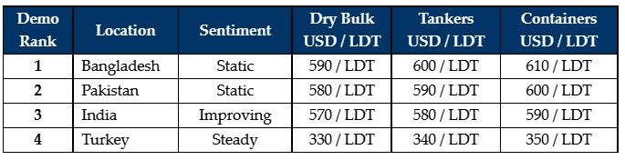

inWeekly Demolition Reports17/01/2022

Recycling markets (especially in the sub-continent) seem poised for some positive movements this week, as both Cash Buyers and End Buyers seem increasingly willing to compete on any available tonnage.
There have been several specialist units, Stainless Steel Tankers & Fish Factories – being the flavor of the recent supply into India of late – as both Pakistan and Bangladesh watch stranded on the sidelines, due to the ongoing paucity of vessels that has been suffocating the markets of late.
Even the Turkish market endured a period of resilience this week, as all of the essential fundamentals remained in sync with last week’s levels, giving Aliaga Buyers the continued sense of stability that this market has endured of late.
There are very few large LDT vessels in the market to discuss at present, especially as talks of a recovery in Tanker rates at some point this year continue to make the rounds and as Dry Bulk and Container rates continue to soar. Indeed, those vessels that may have been scrap candidates not too long ago, are now seeking to pass surveys and continue trading for better returns – such is the state of the trading markets at present.
There also seems to be a degree of optimism in the markets moving forward (both in terms of steel and currencies), hence the upward scramble in prices that is being witnessed of late,, especially when a vessel is introduced for a recycling sale.
The overall preference does seem to be for smaller LDT vessels since the markets are indeed at historically highs and levels can fluctuate wildly from week-to-week. As such, we have not seen such positivity-&-demand for some months now as we are currently witnessing in the market.
As the Chinese / Lunar new year holidays approach in the Far East, it may be a slower period in terms of supply for sub-continent markets, and this in turn may further lead to a firming of demand / prices.
For week 2 of 2022, GMS demo rankings / pricing for the week are as below.

📄 Download PDF: 2022-01-17Qiu_org.pdfSource: GMS,Inc. (https://www.gmsinc.net/gms_new/index.php/web)